Prefabrikované betonové šachty, žlaby a odvodňovací systémy
Společnost BETONIKA spol. s r.o. patří k nejvýznamnějším českým výrobcům kanalizačních a dopravních prefabrikátů. Vyrábíme patentovaná monolitická šachtová dna SOLID, vibrolisované šachty DN 400 až DN 1000, velkokapacitní štěrbinové žlaby pro dálnice a letiště i ucelené systémy uličních vpustí certifikované pro České dráhy.
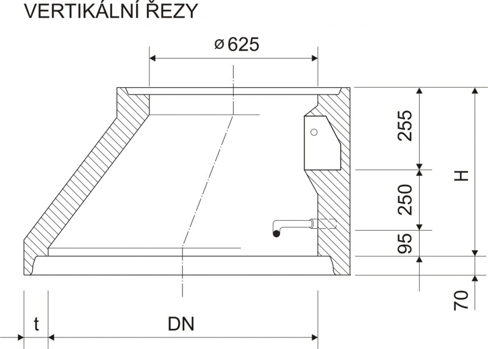
Konfigurátor prefabrikovaných sestav
Zvolte typ systému a získejte okamžitou specifikaci prefabrikovaných dílců BETONIKA pro váš projekt včetně hmotnosti a norem.
Sestava šachty DN 1000 SOLID
Certifikované betonové stavební prvky
Kompletní portfolio kanalizačních prefabrikátů, odvodňovacích systémů silnic a dálnic, šachet a vtoků vyráběných dle platných evropských norem.
 ČSN EN 1917
ČSN EN 1917
Jednolité šachtové dno SOLID
Monolitická kyneta litá z jednoho kusu betonu C 35/45 v jednom kroku. Žádné montážní lepené spáry, absolutní vodotěsnost a chemická odolnost XA3.
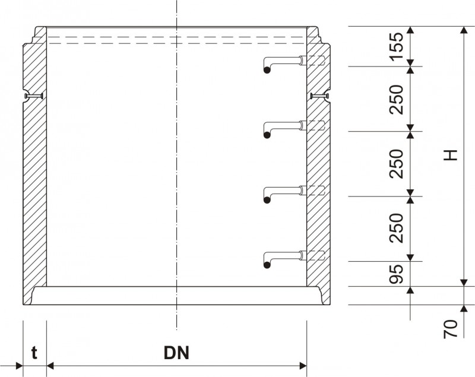
ČSN EN 1917Vibrolisované dno do DN 400
Vysoce hutněná vibrolisovaná šachtová dna s integrovanými elastomerními těsněními pro hladká plastová, kameninová i betonová potrubí.
 ČSN EN 1917
ČSN EN 1917
Vibrolisované dno do DN 600
Dimenzovaná šachtová komora pro hlavní sběrné stoky. Zesílená tloušťka stěn zaručuje stabilitu i ve vysokých hladinách spodní vody.
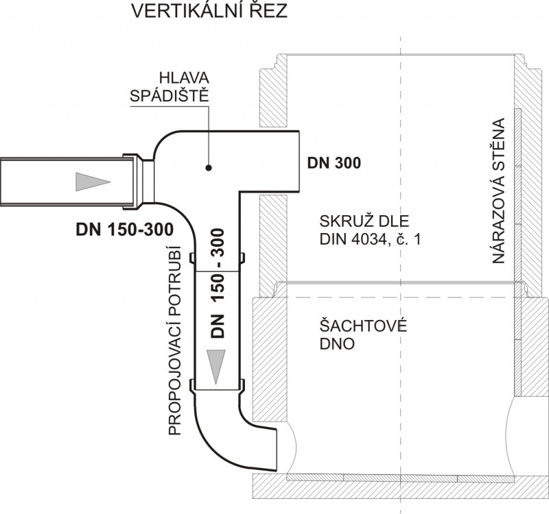
ČSN EN 1917Vibrolisované dno do DN 1000
Těžká prefabrikovaná dna pro velkoobjemové kmenové stoky měst a průmyslových zón s přímým nátokem i bočními úhlovými přípojkami.
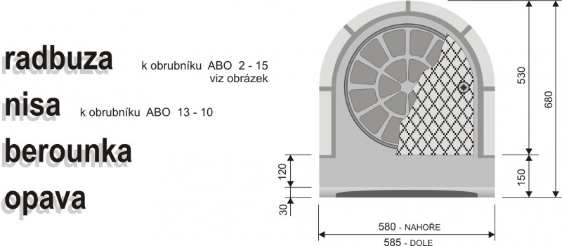
ČSN EN 1917Šachtové dno se stavítkem
Speciální šachtové dno vybavené nerezovými vodicími lištami pro instalaci deskového hradidla nebo regulátoru odtoku dešťových vod.
 ČSN EN 1917
ČSN EN 1917
Kanalizační skruže přímé TBS-Q
Vibrolisované skruže s pero-drážkovým zámkem pro klínové těsnění. Osazeny certifikovanými poplastovanými ocelovými stupadly.
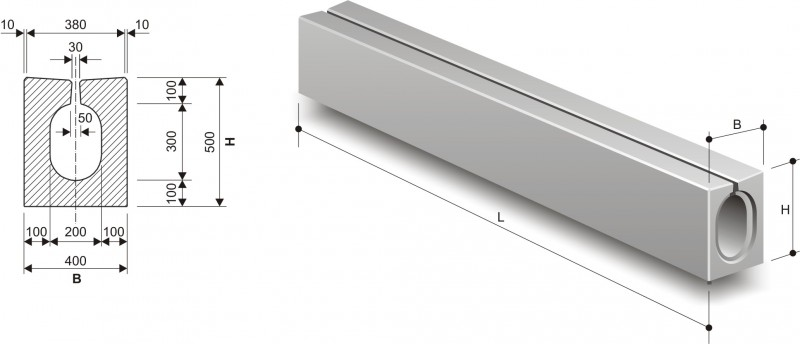
ČSN EN 1917Přechodový kónus TBR-Q a spádiště
Excentrický kónus pro redukci šachty z DN 1000 na revizní vstup 625 mm. V sortimentu také spádišťové a horské přepadové komory.
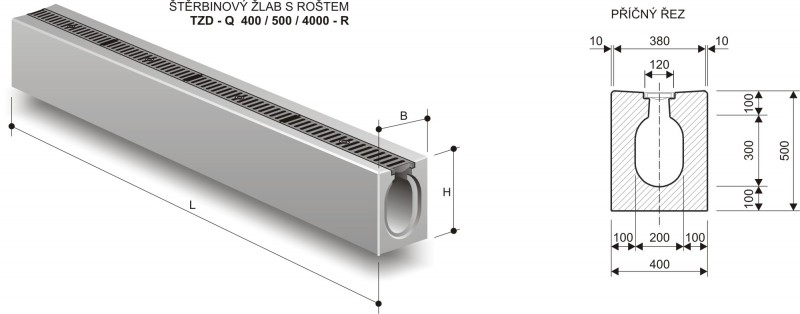
ČSN EN 1917Vyrovnávací prstence TBW-Q a desky
Prstence výšky 40 až 120 mm pro přesné usazení poklopu do sklonu povrchu vozovky a železobetonové přechodové desky pro nízké šachty.
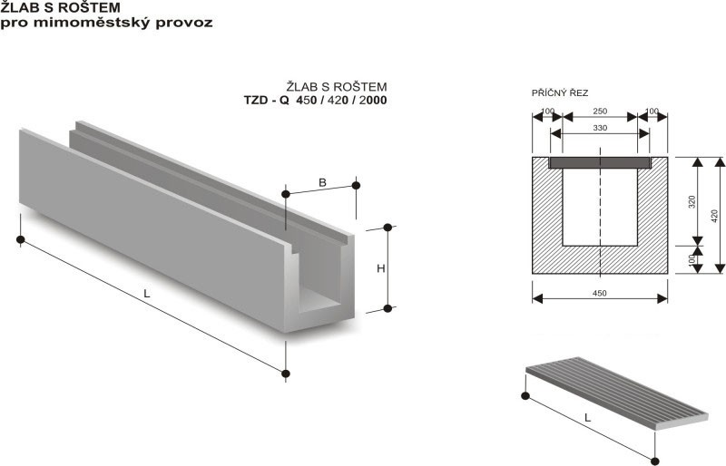
ČSN EN 1433Žlab s průběžnou štěrbinou
Monolitický odvodňovací žlab Profil I a II bez vyjímatelného roštu pro maximální bezpečnost provozu při vysokých rychlostech na silnicích a dálnicích.
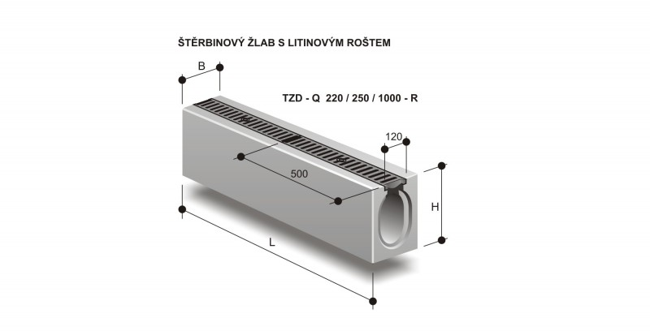
ČSN EN 1433Žlab s litinovým krycím roštem
Velkokapacitní žlab s integrovaným masivním litinovým roštem pro rychlý odvod přívalových srážek na letištích, terminálech a parkovištích.
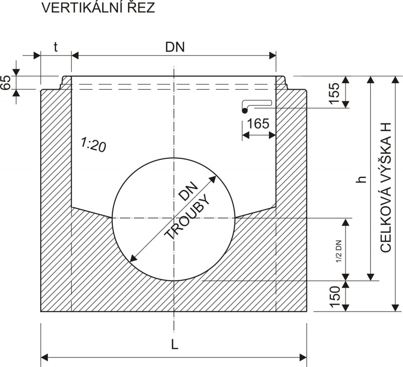
ČSN EN 1433Žlab velký s integrovaným obrubníkem
Kombinovaný prefabrikát plnící současně funkci silničního obrubníku a vysoce účinného liniového odvodnění kraje jízdního pruhu.
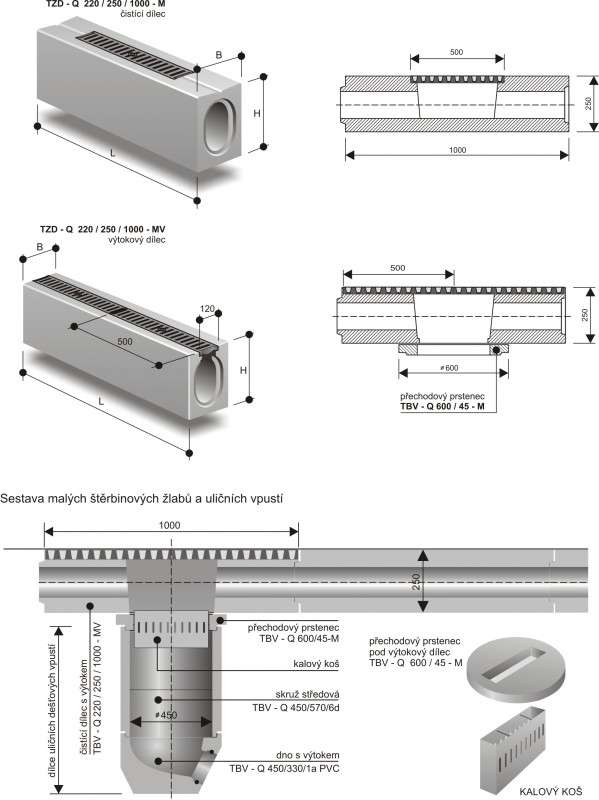
ČSN EN 1433Štěrbinové žlaby malé
Kompaktní profilované žlaby s průběžnou i přerušovanou štěrbinou pro zpevněné plochy, náměstí, obchodní centra a vjezdy do objektů.
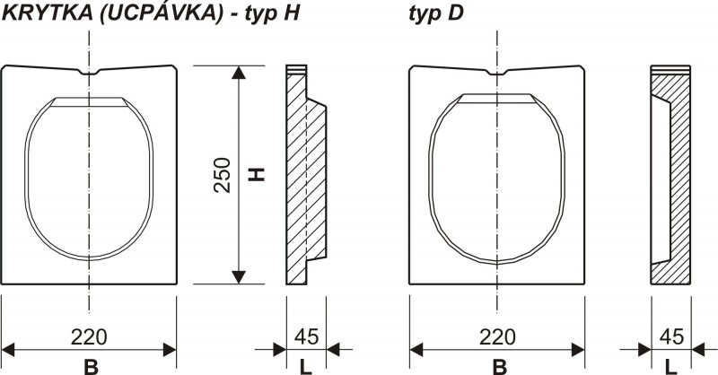
ČSN EN 1433Velkokapacitní žlab F900 letištní
Masivní odvodňovací žlaby pro letištní plochy, kontejnerové terminály a průmyslové areály s nosností až 900 kN (90 tun na nápravu).
 ČSN EN 1433
ČSN EN 1433
Čisticí kusy a čelní záslepky
Revizní vtokové a čisticí dílce s integrovaným sedimentačním košem pro zaústění do kanalizace a masivní čelní záslepky linií žlabů.
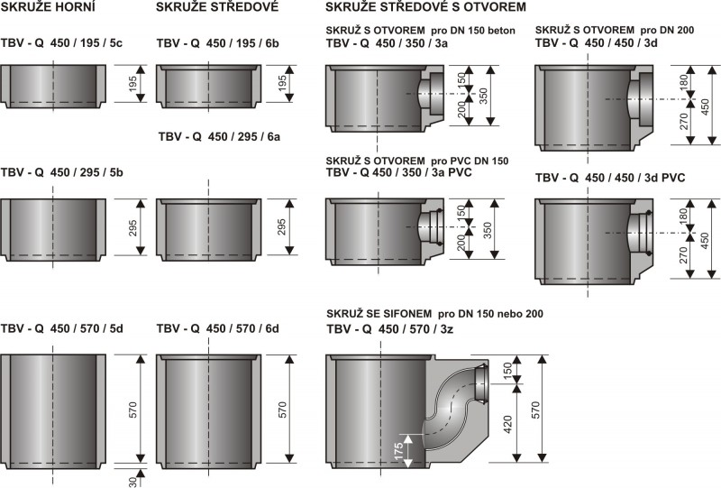
ČSN EN 124Uliční vpusti UVB (dna s výtokem)
Prefabrikovaná vibrolisovaná dna s kalovou prohlubní a výtokovým hrdlem pro potrubí DN 150 a DN 200 s těsněním. Zajišťují zachycení splavenin.
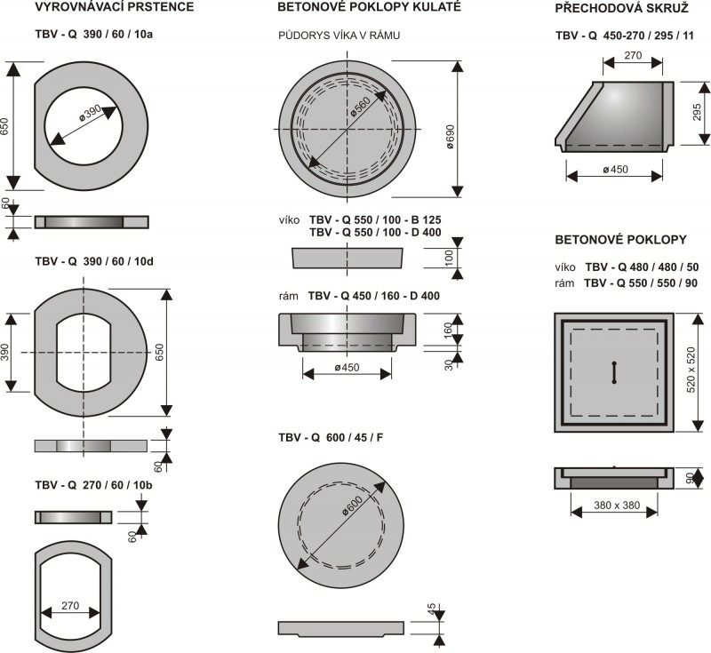
ČSN EN 124Skruže uličních vpustí horní a středové
Svislé nástavce DN 450 mm výšky 195, 295 a 570 mm pro flexibilní sestavení přesné stavební hloubky uliční vpusti k úrovni povrchu.
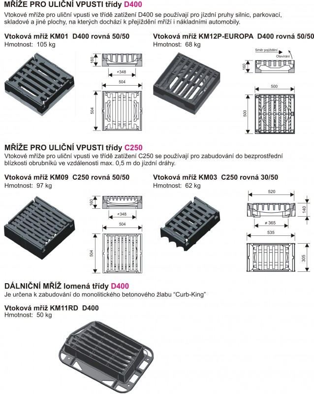
ČSN EN 124Dvorní vpusti modulární
Kompaktní betonové dílce pro hospodářské dvory, výrobní haly a zpevněné manipulační plochy s litinovou mříží a vyjímatelným lapačem nečistot.
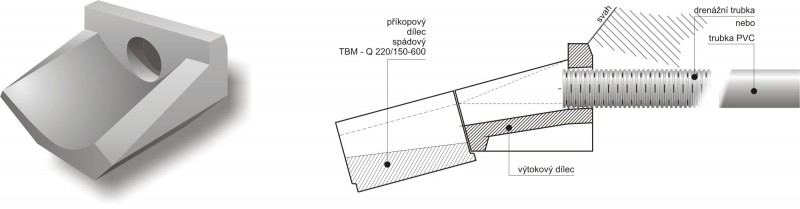
ČSN EN 124Vtokové mříže D400 a kalové koše
Samonivelační i rámové vtokové mříže z tvárné litiny s tlumicí vložkou a pozinkované hluboké či mělké koše na zachycení listí a štěrku.
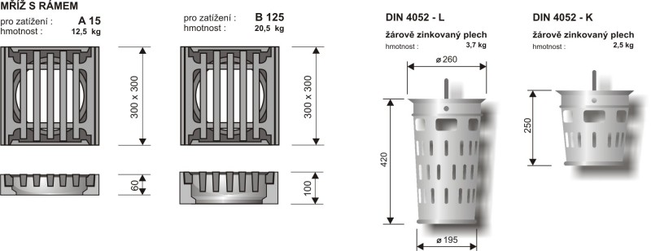
ČSN EN 124Kanalizační poklopy D 400 BEGU
Litinobetonové a celolitinové poklopy pro komunikace a dálnice s pryžovým tlumicím těsněním v rámu eliminujícím hluk při přejezdu vozidel.
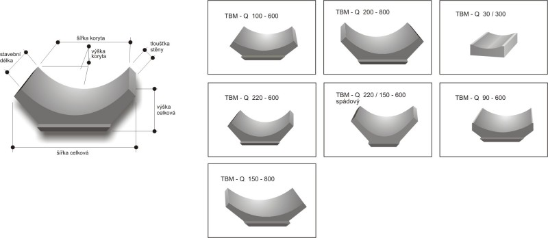
ČSN EN 124Kanalizační poklopy B 125
Litinové šachtové poklopy určené pro chodníky, pěší zóny, vjezdy a parkovací stání osobních automobilů s bezpečným protiskluzovým vzorem.
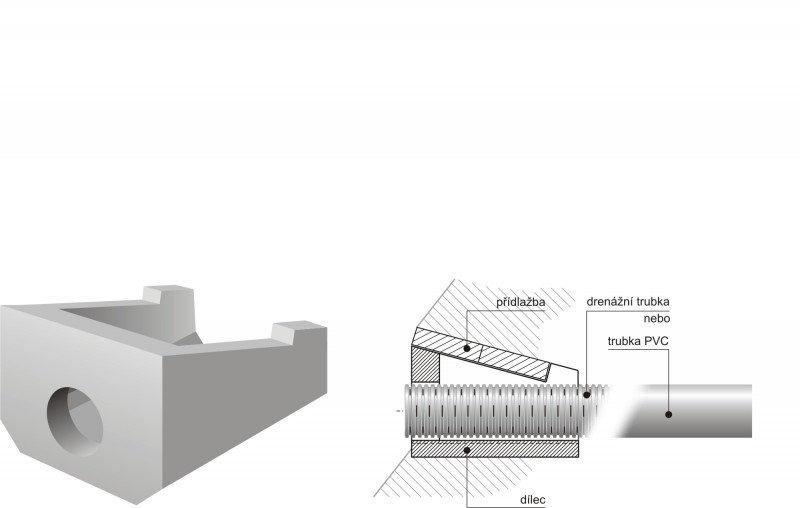
ČSN EN 124Kanalizační poklopy A 15 lehké
Lehké pochozí poklopy pro plochy výhradně určené chodcům a cyklistům, travnaté pásy u komunikací a privátní zahradní šachty.
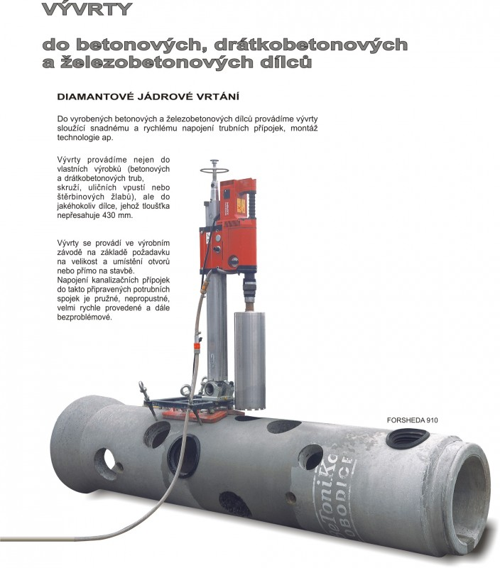
ČSN 73 6201Výtoková čela vnější a vnitřní
Prefabrikovaná šikmá betonová čela pro zaústění trubních propustků do silničních příkopů se sklony svahu 1:1, 1:1,25 a 1:1,5.
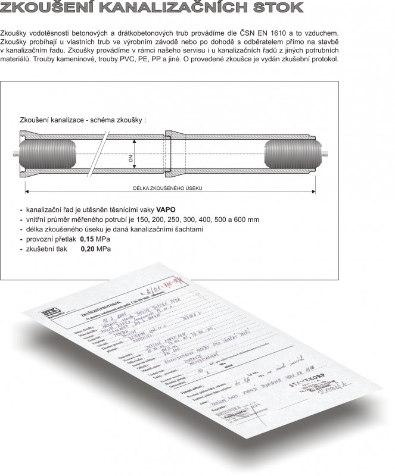
ČSN 72 3120Příkopové dílce a meliorační desky
Prefabrikované betonové žlabovky TZZ a meliorační dlaždice pro spolehlivé odvedení srážkových vod a zpevnění dna silničních příkopů.
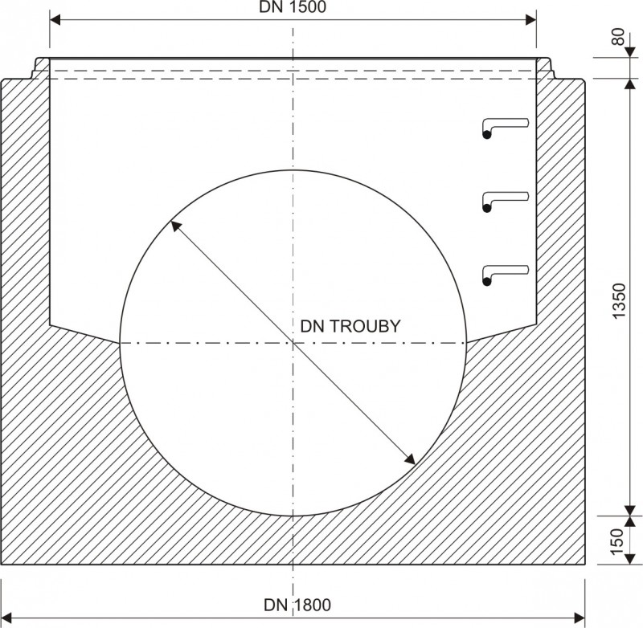
ČSN EN 15258Opěrné stěny a svahové desky
Úhlové a tížné železobetonové stěny pro stabilizaci silničních svahů, nájezdových ramp a terénních zlomů u dopravních i průmyslových staveb.
Specializované služby přímo na staveništi
Kromě výroby prefabrikátů zajišťujeme autorizované zkoušky těsnosti stok a přesné jádrové vrtání betonu pro stavební firmy a investory.
Zkoušení vodotěsnosti stok dle ČSN EN 1610
Provádíme akreditované měření těsnosti kanalizačních stok vzduchem (metoda L) i vodou (metoda W) včetně vystavení úředního protokolu ke kolaudaci stavby.
- Tlakové zkoušky vzduchovými pakry
- Vodní zkoušky těsnosti šachet s měřením úbytku
- Úřední protokoly pro kolaudaci a správce VaK
Jádrové diamantové vývrty do betonu
Vrtání přesných kruhových otvorů do stěn šachet, trub a stavebních prefabrikátů pro dodatečné napojení přípojek těsněnými manžetami bez narušení statiky.
- Průměry vývrtů od DN 50 do DN 600 mm
- Vrtání pod přesným úhlem i v ose toku
- Osazení elastomerových šachtových vložek Forsheda
Expedice s hydraulickou rukou a logistika
Vlastní dispečink a flotila nákladních vozů s hydraulickým ramenem pro přesné složení těžkých prvků přímo do výkopu po celé ČR a na Slovensku.
- Nakládka v areálech Lobodice a Rašovice
- Garantované časové sloty pro plynulost montáže
- Zálohované paletové hospodářství EUR
Kompletní certifikace a akreditace jakosti
Výroba společnosti BETONIKA spol. s r.o. podléhá pravidelnému dozoru nezávislých autorizovaných orgánů ZÚS Praha, Správy železnic a EKO-KOM.
Volná pracovní místa v závodech BETONIKA
Hledáme spolehlivé kolegy do našich výrobních areálů v Lobodicích (okres Přerov) a Rašovicích (okres Kutná Hora). Nabízíme zázemí stabilní české výrobní společnosti, férové finanční ohodnocení a dlouhodobou jistotu.
Zámečník / Údržbář ocelových forem
Údržba, seřizování a běžné opravy ocelových forem vibrolisů a technologických linek pro výrobu betonových šachet. Práce na jednu směnu v zázemí údržbářské dílny.
Svářeč a armovač výztuží
Příprava ocelových armokošů a svařování výztuží do monolitických šachtových den SOLID a přechodových desek dle výkresové dokumentace.
Dělník betonářské výroby / Obsluha vibrolisu
Obsluha automatické a poloautomatické formovací linky, vkládání výztuží, vibrolisování šachet a manipulace s hotovými prefabrikáty mostovým jeřábem.
Anna Kunová
Mzdová a personální účetní • Informace o volných pozicích a nástupních podmínkách
Klíčové kontaktní osoby společnosti
Naši obchodní zástupci, vedoucí výroby, technologové a dispečeři jsou vám k dispozici pro technické posouzení stavby i přesný harmonogram nakládky.
Ing. Andrea Hýbnerová
Robert Crhák
Ing. Alexandra Škrabalová
Jakub Kopa
Radek Zajíček
Erika Studničková
Sídlo společnosti a expedice
č.p. 221, 751 01 Lobodice (pošta Tovačov)
Okres Přerov, Olomoucký kraj
IČO: 00561681 | DIČ: CZ00561681
Zapsáno v OR u Krajského soudu v Ostravě, oddíl C, vložka 241
Poptávka prefabrikátů
Zašlete nám výkaz výměr nebo specifikaci šachet. Náš obchodní úsek vám obratem připraví technické posouzení a harmonogram expedice.